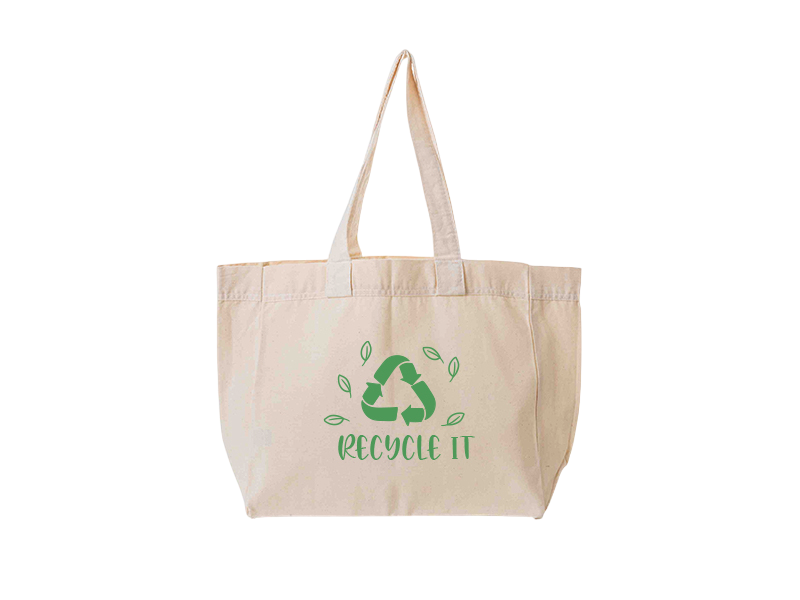
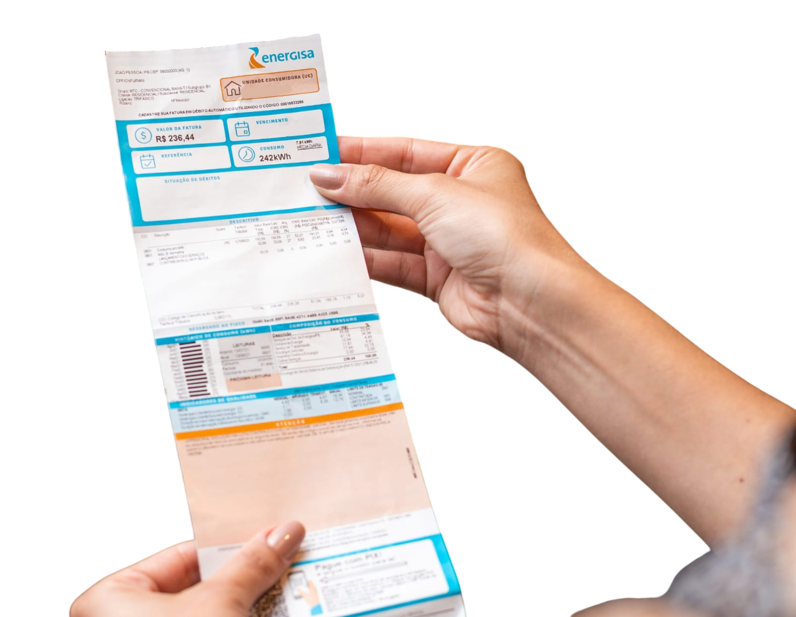
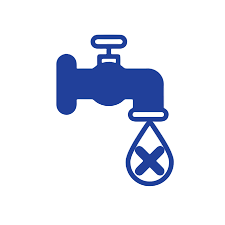
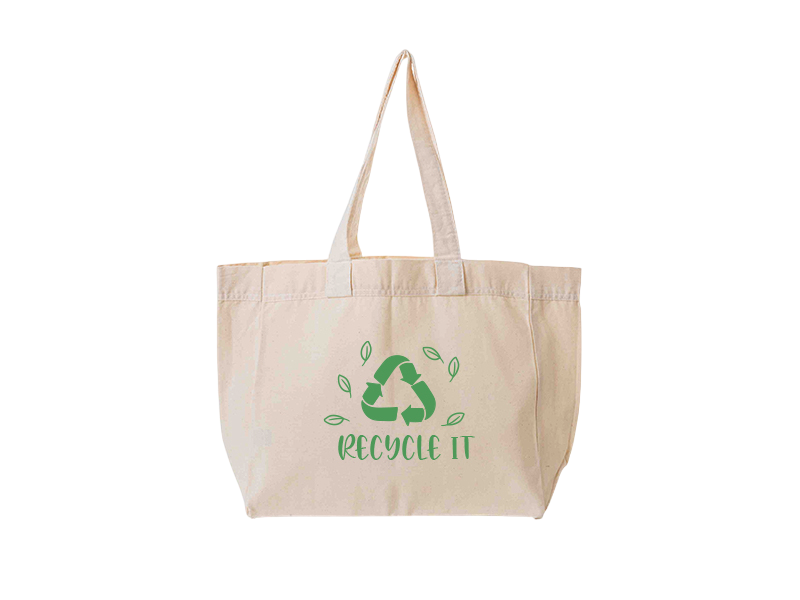
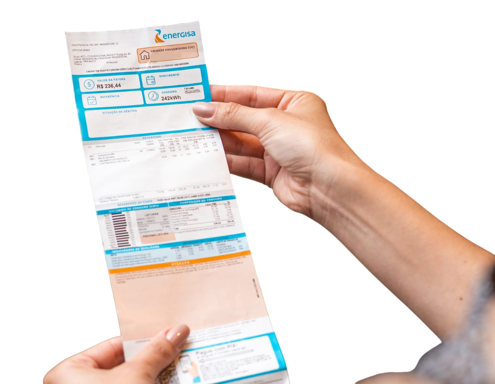
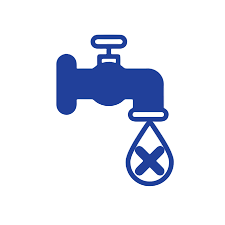

Recompensas
Pontos acumulados:
0
Ecobag personalizada
Troque por 50 pontos
Desconto Super Mercado
Troque por 100 pontos
Desconto em Conta de Luz
Troque por 150 pontos
Desconto em Conta de Água
Troque por 150 pontos
Pontos acumulados:
0
Troque por 50 pontos
Troque por 100 pontos
Troque por 150 pontos
Troque por 150 pontos
